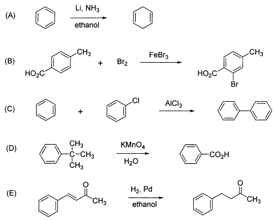

令和3年度 問1 有機化学及び燃料
ベンゼン環を有する有機化合物の次の（A）～（E）の反応式うち、生成物を正しく表記している組合せはどれか。

①
A、E
②
B、E
③
A、B、C
④
A、B
⑤
B、C、D
正答
① A、E
Aはバーチ還元です。アンモニアとアルコールの混合溶媒中でアルカリ金属やアルカリ土類金属で処理することでベンゼン環が1,4-シクロヘキサジエンに還元されます。
Bはフリーデルクラフツ反応です。反応は起こりますがブロモ基の結合する箇所はメチル基から見てオルト位となります。
Cもフリーデルクラフツ反応に似ていますが、このようなカップリング反応は起きません。
Dはアルキルベンゼンの過マンガン酸カリウムを用いた酸化反応です。ベンゼン環に直結した炭素（ベンジル位）が酸化されてアルキル基の長さに関係なく安息香酸が生成します。ただし第三級炭素側鎖は酸化しません。例えば原料にトルエンを用いると問題のような反応が起こり得ます。
Eはアルケンやアルキンへのパラジウムによる接触水素化です。固体表面上で反応することから、2個の水素が同一方向に付加するシン付加であることが特徴です。ベンゼン環は安定なため、常温・常圧では反応せず、高温・高圧でのみ水素化してシクロヘキサンに変換できます。